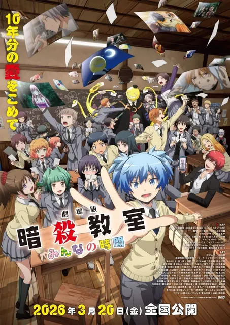
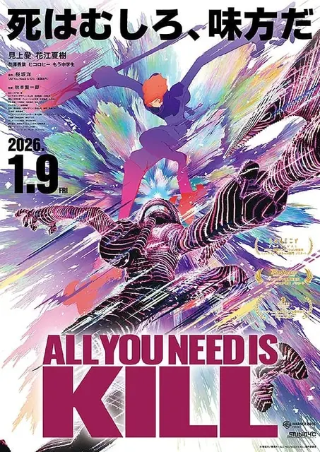

009我们不可能成为恋人!绝对不行。 (※似乎可行?) 〜再次闪耀!〜わたしが恋人になれるわけないじゃん、ムリムリ!(※ムリじゃなかった!?)〜ネクストシャイン!〜TV · 5话 · 2026-01-01 · 轻小说改TV · 5话 · 01-01 · 轻小说改喜剧恋爱7.36296
014透明男与人类女~不久成为夫妇的二人~透明男と人間女~そのうち夫婦になるふたり~TV · 12话 · 2026-01-08 · 漫画改TV · 12话 · 01-08 · 漫画改恋爱奇幻6.8984
015判处勇者刑 惩罚勇者9004队刑务纪录勇者刑に処す 懲罰勇者9004隊刑務記録TV · 12话 · 2026-01-03 · 轻小说改TV · 12话 · 01-03 · 轻小说改奇幻战斗6.75151
026地狱模式~喜欢挑战特殊成就的玩家在废设定的异世界成为无双~ヘルモード ~やり込み好きのゲーマーは廃設定の異世界で無双する~TV · 12话 · 2026-01-09 · 轻小说改TV · 12话 · 01-09 · 轻小说改恋爱奇幻6.01487
033学园偶像大师 Story of Re;IRIS学園アイドルマスター Story of Re;IRISTV · 11话 · 2026-01-01 · 游戏改TV · 11话 · 01-01 · 游戏改音乐校园5.8312
037卡片战斗先导者 Divinez 幻真星战篇カードファイト!! ヴァンガード Divinez 幻真星戦編TV · 12话 · 2026-01-10 · 原创动画TV · 12话 · 01-10 · 原创动画奇幻战斗5.732
039正义使者 -我的英雄学院之非法英雄- 第二季ヴィジランテ -僕のヒーローアカデミア ILLEGALS- 第2期TV · 13话 · 2026-01-05 · 漫画改TV · 13话 · 01-05 · 漫画改恋爱奇幻5.6224
042安逸领主的愉快领地防卫~以生产系魔术将无名小村打造成最强要塞都市~お気楽領主の楽しい領地防衛~生産系魔術で名もなき村を最強の城塞都市に~TV · 12话 · 2026-01-10 · 轻小说改TV · 12话 · 01-10 · 轻小说改恋爱奇幻5.31410
052贵族转生 ~得天眷顾一出生就获得最强力量~貴族転生 ~恵まれた生まれから最強の力を得る~TV · 12话 · 2026-01-07 · 轻小说改TV · 12话 · 01-07 · 轻小说改奇幻战斗4.81149
053身为魔族的我想向勇者小队的可爱女孩告白。勇者パーティーにかわいい子がいたので、告白してみた。TV · 13话 · 2026-01-06 · 来源未知TV · 13话 · 01-06 · 来源未知恋爱奇幻4.71066
055「凭你也想讨伐魔王?」被勇者小队逐出队伍,只好在王都自在过活「お前ごときが魔王に勝てると思うな」と勇者パーティを追放されたので、王都で気ままに暮らしたいTV · 12话 · 2026-01-08 · 轻小说改TV · 12话 · 01-08 · 轻小说改奇幻冒险4.61098
056SI-VIS:英雄之声续播SI-VIS: The Sound of HeroesTV · 24话 · 2025-10-05 · 原创动画TV · 24话 · 10-05 · 原创动画奇幻战斗4.6899
069DARK MOON -黑之月: 月之祭坛-DARK MOON -黒の月: 月の祭壇-TV · 12话 · 2026-01-09 · 漫画改TV · 12话 · 01-09 · 漫画改恋爱奇幻4.0107
001机动战士高达 闪光的哈萨维 喀耳刻的魔女機動戦士ガンダム 閃光のハサウェイ キルケーの魔女MOVIE · 1话 · 2026-01-30 · 来源未知MOVIE · 1话 · 01-30 · 来源未知科幻战斗7.51112
002银河特急 Milky✩Subway 各站停车前往剧场銀河特急 ミルキー☆サブウェイ 各駅停車劇場行きMOVIE · 1话 · 2026-02-06 · 原创动画MOVIE · 1话 · 02-06 · 原创动画科幻冒险7.2101
003剧场版 暗杀教室 大家的时间劇場版 暗殺教室 みんなの時間MOVIE · 1话 · 2026-03-20 · 漫画改MOVIE · 1话 · 03-20 · 漫画改喜剧科幻6.9195
004少女与战车 lovelove大作战! 第3幕ガールズ&パンツァー もっとらぶらぶ作戦です! 第3幕MOVIE · 3话 · 2026-03-06 · 漫画改MOVIE · 3话 · 03-06 · 漫画改战斗日常6.9157
006少女与战车 lovelove大作战! 第2幕ガールズ&パンツァー もっとらぶらぶ作戦です! 第2幕MOVIE · 3话 · 2026-01-30 · 漫画改MOVIE · 3话 · 01-30 · 漫画改校园日常6.8174
010哆啦A梦:新・大雄的海底鬼岩城映画ドラえもん 新・のび太の海底鬼岩城MOVIE · 1话 · 2026-02-27 · 来源未知MOVIE · 1话 · 02-27 · 来源未知科幻战斗5.634
011剧场版 关于我转生变成史莱姆这档事 苍海之泪篇劇場版 転生したらスライムだった件 蒼海の涙編MOVIE · 1话 · 2026-02-27 · 来源未知MOVIE · 1话 · 02-27 · 来源未知奇幻战斗4.9376
012杀戮轮回ALL YOU NEED IS KILLMOVIE · 1话 · 2026-01-09 · 轻小说改MOVIE · 1话 · 01-09 · 轻小说改科幻冒险4.770